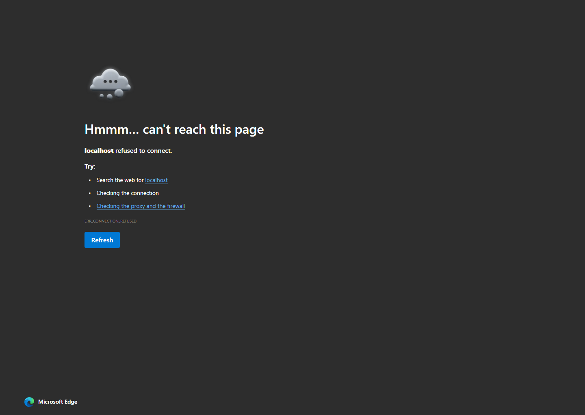

Lead recovery system
Missed Call & Voicemail Recovery
When a business misses a call, WARPATH answers, captures the voicemail, texts back, creates the lead, and keeps the follow-up visible.

What happens
A missed call should not disappear.
The system gives the caller a path, gives the team context, and gives the owner proof that the lead was handled.
Call is missed
The business number routes unanswered calls to the WARPATH voicemail flow.
Voicemail is captured
The caller leaves what they need. The recording and transcript are saved against the lead.
Text goes out
The caller gets a fast reply so they know the business saw it and can respond by text.
Follow-up is owned
The lead lands in the CRM with notes, status, and the next touch due.
Built into WARPATH
Not a loose answering service.
The bot is useful because it feeds the same dashboard and pipeline the team already works from.
AI voicemail summary
Transcript, short summary, and caller intent written to the lead timeline.
Immediate text-back
A simple reply confirms the message was received and keeps the conversation open.
Pipeline record
Name, phone, source, transcript, owner, and next follow-up stay in the CRM.
Owner visibility
Missed-call leads, untouched leads, and overdue follow-up show in the dashboard.
Automation hooks
Tag, alert, task, email, SMS, or webhook actions can run when a voicemail lands.
Suite-ready
Works as the first bot, then expands into quote follow-up, reviews, and reporting.
Where the lead goes

The owner sees the leak
Missed calls become countable work instead of a vague feeling that leads are slipping.

The story stays with the person
The voicemail summary, reply status, source, and follow-up notes stay attached to the lead.
Someone owns the next move
The lead is visible until it is contacted, booked, won, lost, or moved into a longer follow-up.
Make missed calls measurable.
Start here when phone leads matter and the team cannot answer every call.